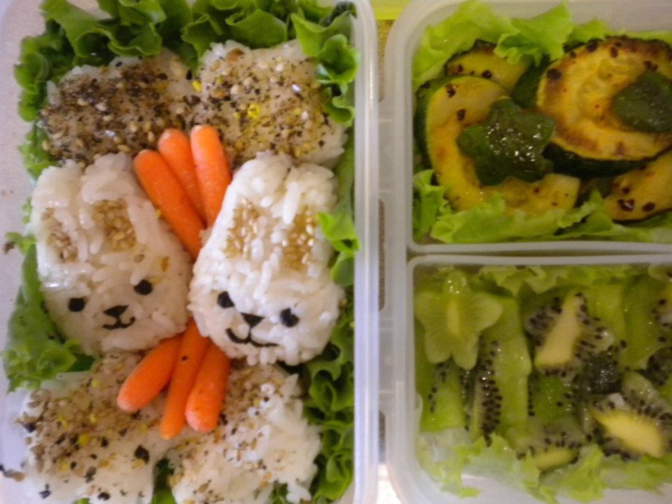

- Cute Bunnies
- Ingredients:
- Rice
- Baby Carrots
- Zuchini
- Kiwi
- Rice Seasoning
- Green Leaf Lettuce
- Bunny and Star Shaped Rice Molds
- Directions:
-
- Using the rice molds, make two bunnies and four stars, sprinkle the stars with rice seasoning, place in bento box on bed of green leaf lettuce.
- Using the cookie cutters, cut the zuchini and kiwi. Fry the zuchini and place both the kiwis and zuchini in the bento box.
- Place carrots in bento box to fill space round the bunnies ^.^
